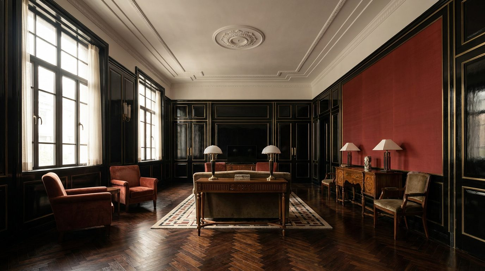

Atlante · INT-CN-01 · Cina · Asia
Appartamento in palazzina anni Venti con boiserie laccata e ottone brunito
Esempi · esterno e interno


Perché funziona
Entrambi: la lacca nera lucida, l'ottone brunito e la scala di 3,6 m sono loud, ma il disegno è geometrico e misurato, con una sola parete cinabro e nessun ornamento superfluo. Funziona come ponte tra i due registri del catalogo.
Architettura · elementi riproducibili
- soffitto 3,6 m con cornice a gradoni 300 mm e rosetta centrale in gesso
- boiserie in lacca nera lucida, modulo 1200 mm, gola 10 mm, altezza 2400 mm
- inserimenti in ottone brunito 6 mm a disegno geometrico, passo 300 mm
- parquet in rovere a spina di pesce 45 gradi, doghe 90x600 mm
- finestre a ferro con telaio a 3 ante, 2400 mm, davanzale in marmo 30 mm
- doppia porta a battenti 2600 mm con specchiatura laccata
- divano basso 380 mm in velluto verde scuro e tavolino laccato: soli due arredi
Fatto verificato: il Peace Hotel (Sassoon House, completato nel 1929, stile Art Deco) e il Chartered Bank Building detto Bund 18 sono i riferimenti Art Deco sul Bund; Rong Zhai (acquistato nel 1918, casa occidentale a tre piani, interno tra classicismo francese ed elementi cinesi) è stato restaurato da Prada con un cantiere di sei anni, ed è il precedente giusto per lacca e ottone su un guscio storico.
Valutazione: è 'entrambi' perché la lacca nera lucida e la scala sono loud, mentre il disegno e la misura dei pannelli restano quiet; la differenza la fa quanta superficie lucida entra in inquadratura (massimo 35-40%).
Registro colore assegnato Colorful + Color Block: il cinabro è un blocco di colore pieno su una parete, il resto è materia; nessun motivo decorativo pittorico.
Luce
Prompt di generazione (EN)
Shanghai apartment living room in a 1920s block, 3.6 m ceiling with a 300 mm stepped plaster cornice and central rosette, high-gloss black lacquer boiserie 2400 mm high in 1200 mm modules with 6 mm burnished brass inlay at 300 mm pitch, a book-matched cinnabar lacquer panel on the end wall, ivory lime plaster above, 90 x 600 mm oak parquet in a 45 degree chevron, tall three-leaf steel-framed windows 2400 mm wide onto a balcony, walls with a 10 mm shadow gap, only a 380 mm low sofa in dark green velvet and a lacquered side table, hard east sun at 30 degrees striking the glossy lacquer with restrained specular highlights, 28 mm lens at 1.25 m height, two-point perspective with parallel verticals, no people, no text.